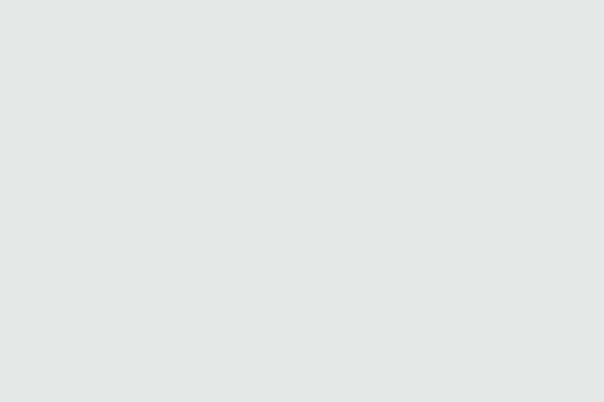
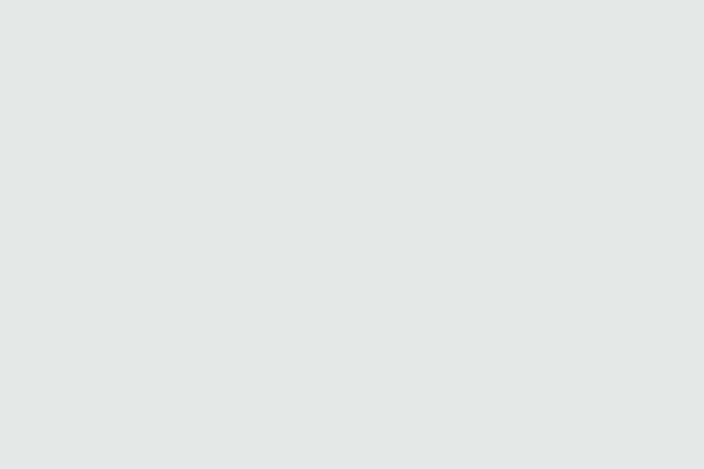

Treino em turma pequena, no horário que cabe
A Base fica no bairro Canaã, em Sete Lagoas. Confira a grade, escolha uma aula experimental e converse com o treinador.
Grade semanal
Marcar aula experimentalEscolha um horário e a mensagem já vai pronta para o WhatsApp.

Serviços
- Gratuita, agendada
Aula experimental
Uma aula para conhecer o espaço, a dinâmica da turma e conversar com o treinador.
- R$ 139 por mês
Plano 2 vezes por semana
Acesso às aulas em dois dias fixos da semana.
- R$ 179 por mês
Plano 3 vezes por semana
Aulas em três dias por semana, conforme a grade disponível.
- R$ 219 por mês
Plano livre
Participação em até cinco aulas semanais, com reserva de vaga.
- R$ 90, 50 min
Treino individual
Sessão individual com exercícios definidos conforme objetivo e condição física.
Treino orientado, sem lotação
Na Base, as aulas de funcional são em grupos pequenos e o treinador acompanha os exercícios. A gente adapta a atividade ao nível de cada pessoa.
Venha com roupa confortável e uma garrafa de água. Antes da primeira aula, conte se tem alguma lesão ou restrição para o treinador orientar os movimentos.

Perguntas frequentes
Preciso já estar treinando para fazer a aula?
Não. O treinador conversa com você e orienta as opções de movimento durante a aula.
Como reservo uma vaga na turma?
Mande uma mensagem com o horário desejado. As vagas são confirmadas pela recepção.
O que levo para a aula?
Roupa confortável, tênis e água. Chegue alguns minutos antes para conversar com o treinador.
Posso repor uma aula que perdi?
As reposições dependem de vaga em outra turma e das regras do plano; consulte a recepção.
Fale com a gente
Rua Equador, 183, Canaã, Sete Lagoas - MG
Sete Lagoas, MG
- Seg a sex: 6h às 20h
- Sáb: 8h às 11h
WhatsApp (31) 90000-0000
Telefone (31) 90000-0000
contato@exemplo.com.br